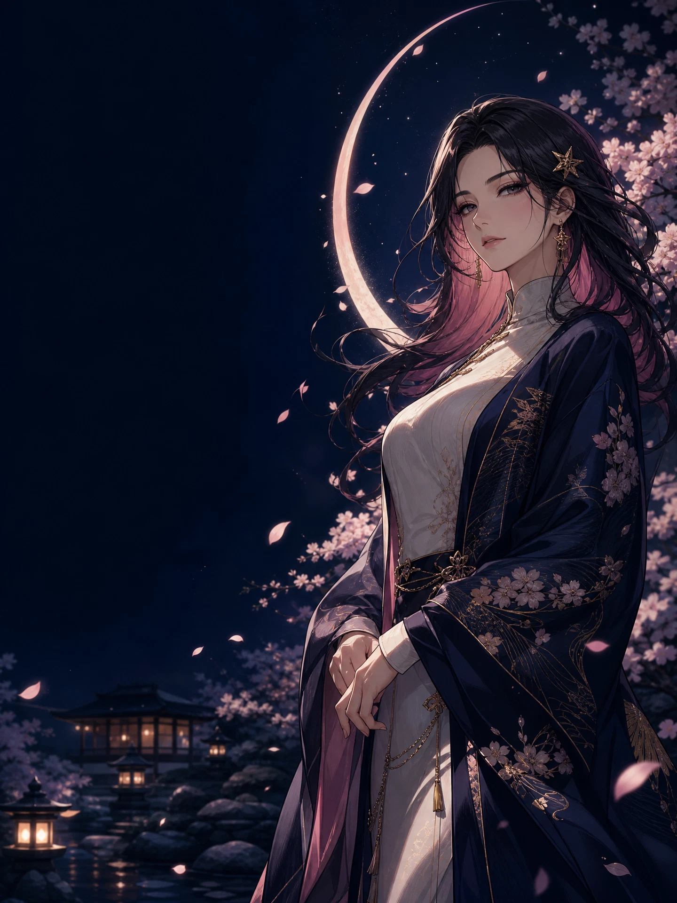

⌁
科技云梯：沿月轨越过数据云层
一枚通往云端秘境的科技云梯软件入口；让需要抵达的文件，沿着星光阶梯安静启程。
沿星阶前往 ↗
MOON ARC MESSENGERAurelia · 月城·澄璃
01 · LATEST LETTERS
从星尘、书页与漫长的夜里，挑选三封值得打开的来信。
02 · CHARACTER CONSTELLATION
她们是这座花园的叙事坐标。选择一枚星印，读一段只属于她的月下旁白。
STATIC GARDEN · ARCHIVE EDITION
本版本已迁移为纯静态花园：不收集访客数据，也不提供留言或图片投递入口。所有页面内容都只在浏览器中呈现，让这座夜色花园保持轻盈而私密。